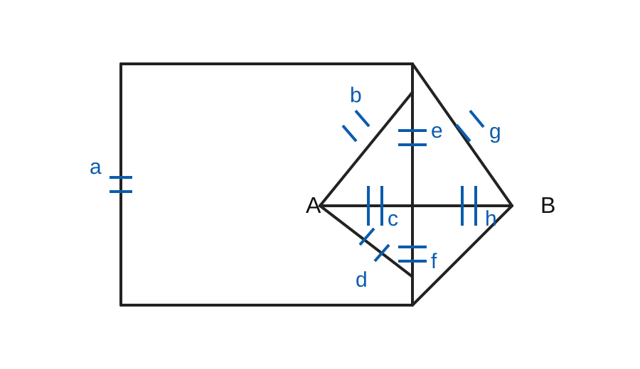
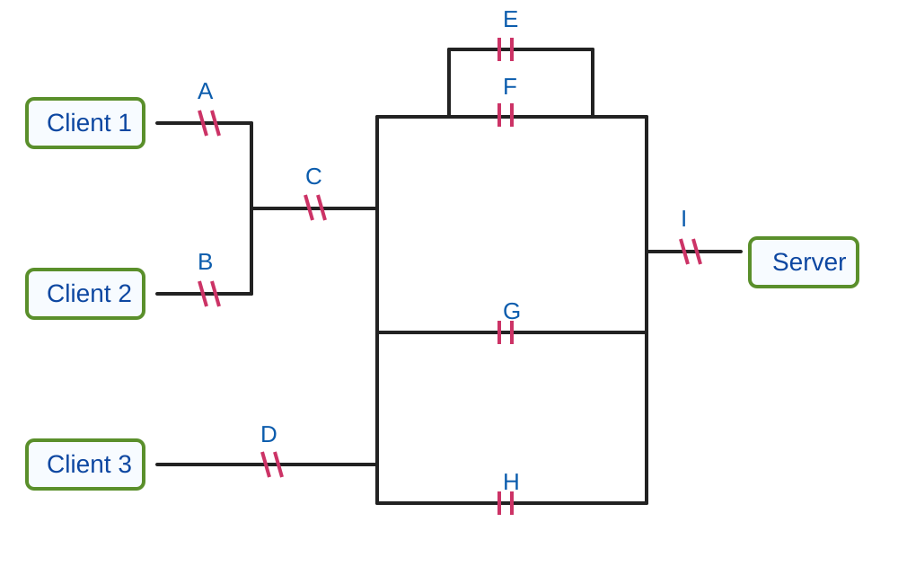
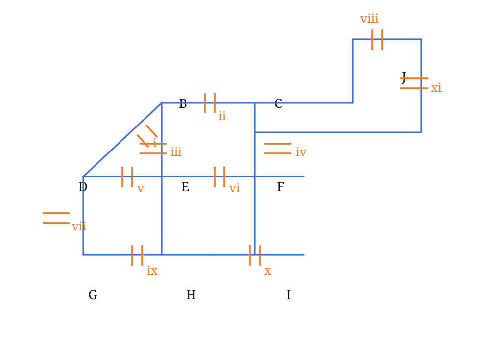

Lembar Soal dan Solusi Gabungan
Ringkasan soal-jawab dari thread Probabilitas dan Statistika
1 Keterangan
Dokumen ini menggabungkan seluruh soal dan jawaban yang muncul pada thread ini ke dalam satu berkas Quarto.
Topologi jaringan digambar ulang dalam format vektor (.svg) agar tetap tajam saat dirender.
Catatan: untuk soal terakhir (UTS 2022), topologi digambar ulang berdasarkan interpretasi visual dari gambar sumber.
Solusi numerik mengikuti hasil diskusi pada thread.
2 Soal 1 — Jaringan 8 Link antara A dan B
2.1 Topologi hasil ekstraksi dan gambar ulang

2.2 Pernyataan soal
Probabilitas sebuah link bekerja dengan baik adalah (0.6).
- Jika sistem diamati pada waktu acak, berapa kemungkinan:
- tepat dua link bekerja dengan baik?
- link (g) dan tepat satu link lagi bekerja dengan baik?
- Jika secara bersamaan tepat enam link tidak bekerja dengan baik, berapa kemungkinan (A) dapat berkomunikasi dengan (B)?
2.3 Solusi
Misalkan (X) = banyaknya link yang bekerja baik. Karena ada 8 link independen dan tiap link ON dengan peluang (0.6), maka:
[ X (8,0.6) ]
2.3.1 (a)(i) Tepat dua link bekerja baik
[ P(X=2)=(0.6)2(0.4)6 ]
[ =28(0.36)(0.004096)=0.04128768 ]
Jawaban:
[ ]
2.3.2 (a)(ii) Link (g) ON dan tepat satu link lain ON
Ada dua cara menuliskannya, dan keduanya ekuivalen:
[ P(g) = (0.6)2(0.4)6 ]
atau
[ P(g)P() = 0.6(0.6)1(0.4)6 ]
Keduanya memberi hasil yang sama:
[ 7(0.6)2(0.4)6 = 0.01032192 ]
Jawaban:
[ ]
2.3.3 (b) Diketahui tepat 6 link OFF
Berarti tepat 2 link ON. Semua pasangan 2-link-ON dianggap sama mungkin.
Total pasangan link ON:
[ =28 ]
Dari topologi, agar (A) dapat berkomunikasi dengan (B) ketika hanya ada 2 link ON, pasangan ON yang efektif adalah dua jalur dua-link langsung: - ({b,g}) - ({c,h})
Jadi banyak pasangan yang menguntungkan ada 2.
[ P(AB ) = = ]
Jawaban:
[ ]
2.4 Ringkasan jawaban Soal 1
[ ]
3 Soal 2 — Jaringan 3 Client dan 1 Server
3.1 Topologi hasil ekstraksi dan gambar ulang

3.2 Pernyataan soal
Setiap simbol || melambangkan sebuah router yang menghubungkan koneksi antara 3 client dan 1 server.
Satu-satunya hal yang memutus rute adalah router yang OFF.
Status router hanya ada dua: ({ON, OFF}).
Semua router independen dan:
[ P(ON)=0.8 ]
Dengan label router (A,B,C,D,E,F,G,H,I), tentukan:
- (P())
- (P())
- (P())
- Diketahui tepat 4 router OFF, sisanya ON. Berapa (P())?
- Diketahui tepat 3 router OFF, sisanya ON. Berapa (P())?
3.3 Solusi
3.3.1 (a) Client 1 terhubung dengan Client 2
Agar Client 1 terhubung dengan Client 2, cukup:
- (A) ON
- (B) ON
Maka:
[ P = 0.8^2 = 0.64 ]
[ ]
3.3.2 (b) Client 1, Client 2, dan Client 3 saling terhubung
Agar ketiganya saling terhubung:
- (A) ON
- (B) ON
- (C) ON
- (D) ON
Maka:
[ P = 0.8^4 = 0.4096 ]
[ ]
3.3.3 (c) Client 1 terhubung dengan Client 3 dan keduanya terhubung dengan server
Syaratnya:
- (A,C,D,I) ON
- minimal satu dari (E,F,G,H) ON
Maka:
[ P = 0.84(1-0.24) ]
[ =0.4096(0.9984)=0.40894464 ]
[ ]
3.3.4 (d) Tepat 4 router OFF
Berarti tepat 5 router ON.
Kita hitung secara kombinatorial bersyarat.
Total konfigurasi 5 router ON:
[ =126 ]
Agar Client 1 terhubung ke server, router yang wajib ON:
- (A,C,I)
- minimal satu dari ({E,F,G,H})
Karena (A,C,I) wajib ON, kita memilih 2 router tambahan dari ({B,D,E,F,G,H}), tetapi tidak boleh hanya ({B,D}).
[ =15 ]
Konfigurasi gagal hanya 1, yaitu ({B,D}).
Jadi konfigurasi menguntungkan:
[ 15-1=14 ]
Maka:
[ P== ]
[ ]
3.3.5 (e) Tepat 3 router OFF
Berarti tepat 6 router ON.
Total konfigurasi:
[ =84 ]
Tetap perlu (A,C,I) ON dan minimal satu dari ({E,F,G,H}) ON.
Sekarang kita memilih 3 router tambahan dari ({B,D,E,F,G,H}).
[ =20 ]
Tidak mungkin semua 3 dipilih hanya dari ({B,D}), jadi semua 20 pilihan valid.
[ P== ]
[ ]
3.4 Ringkasan jawaban Soal 2
[ ]
[ ]
4 Soal 3 — UTS 2022 Soal 5 Sistem Komunikasi
4.1 Topologi hasil ekstraksi dan gambar ulang

4.2 Pernyataan soal
Setiap elemen || melambangkan sebuah link komunikasi.
Failure antar-link saling independen.
Peluang sebuah link bekerja baik adalah:
[ p = 0.9_3 = 0.9 + 0.01_3 ]
Dengan 3 digit terakhir NIM mahasiswa = 1, 2, 3, maka:
[ _1=1,_2=2,_3=3 ]
sehingga:
[ p=0.9+0.01(3)=0.93 ]
Soal:
- Diketahui tepat 7 link tidak bekerja (4 link ON), probabilitas (D) dapat berkomunikasi dengan (J).
- Diketahui tepat 8 link tidak bekerja (3 link ON), probabilitas (D) dapat berkomunikasi dengan (J).
- Diketahui link (i,v,vii,ix,x) pasti tidak bekerja, probabilitas (I) dapat berkomunikasi dengan (J).
- Diketahui link (ii,iv,vi,viii,x,xi) pasti tidak bekerja, probabilitas (B) dapat berkomunikasi dengan (G).
4.3 Solusi dan jawaban akhir
4.3.1 (a) Tepat 7 link OFF
Dengan pendekatan kombinatorial pada 11 link, diperoleh:
- total konfigurasi 4-link-ON:
[ =330 ]
- konfigurasi yang membuat (D) terhubung ke (J): 31
Maka:
[ P(DJ ) = = 0.093939 ]
Dibulatkan 3 angka di belakang desimal:
[ ]
4.3.2 (b) Tepat 8 link OFF
- total konfigurasi 3-link-ON:
[ =165 ]
- konfigurasi yang membuat (D) terhubung ke (J): 3
Maka:
[ P(DJ ) = = = 0.0181818 ]
Dibulatkan 3 angka di belakang desimal:
[ ]
4.3.3 (c) Link (i,v,vii,ix,x) pasti OFF
Dari hasil diskusi thread, peluang (I) terhubung ke (J) ditulis:
[ P = p + (1-p),p,(p+p3-p4) ]
Dengan (p=0.93):
[ P = 0.93 + 0.07 (0.93+0.933-0.934) =0.994208454849 ]
Dibulatkan 4 angka di belakang desimal:
[ ]
4.3.4 (d) Link (ii,iv,vi,viii,x,xi) pasti OFF
Dari hasil diskusi thread, peluang (B) terhubung ke (G) adalah:
[ P=(1-p)(2p2-p4)+p(2p-p2)2 ]
Dengan (p=0.93):
[ P=(0.07)(22-0.934)+0.93(2-0.932)2 =0.9896306886 ]
Dibulatkan 4 angka di belakang desimal:
[ ]
4.4 Ringkasan jawaban Soal 3
[ ]
5 Ringkasan seluruh hasil
5.1 Soal 1
- (P() = )
- (P(g ) = )
- (P(AB ) = )
5.2 Soal 2
- (P() = )
- (P() = )
- (P() = )
- (P( ) = )
- (P( ) = )
5.3 Soal 3
- ()
- ()
- ()
- ()
6 Berkas pendukung
figures/topology_soal1.svgfigures/topology_soal2.svgfigures/topology_soal3.svg
Dokumen ini siap dipakai sebagai bahan kuliah, arsip pembahasan, atau dasar untuk dirender menjadi HTML/PDF melalui Quarto.